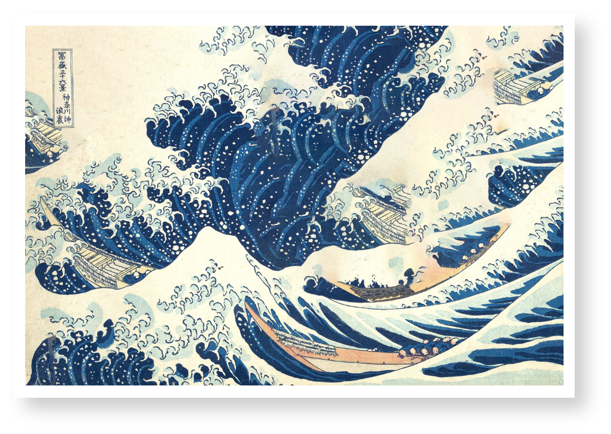
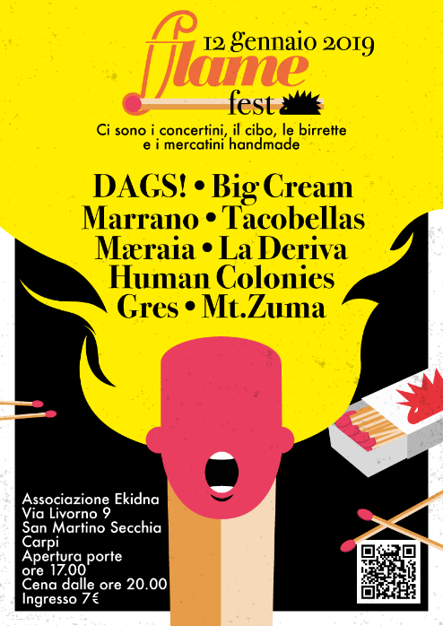

Mi chiamo Matteo Capirossi, nato nel 1991 a Suzzara, ma abito da sempre a Modena.
L’arte nella mia vita è sempre stato un cardine centrale, qualcosa che non sono mai riuscito a contenere e a voler esprimere. Mi ricordo quando all’asilo,dopo aver visto Casper, dipinsi su un grande foglio la mia interpretazione del film, aggiungendo poi brillantini, pezzi di stoffa e carta, creando un coloratissimo collage che le maestre esposero in corridoio.
Da Questo episodio, più o meno ricordo bene tutte le fasi della mia relazione con l’arte, che da Ingenua e Naif, si è poi rafforzata con l’incontro dei miei “grandi maestri” (soprattutto pop, ma comunque tutti moderni e contemporanei). Mi ricordo ancora la prima volta che vidi il primo quadro di Andy Wharol dal vivo. Un gigantesco quadro di Mao Zedong in una galleria Berlinese che mi costrinse a sedermi e ad osservarlo per una decina di minuti.
Mi sono appassionato quindi dell’arte in tutte le sue numerose forme, da quella figurativa alla grafica, dal design alla cinematografia. Il fumetto, i film di animazione e la musica, che a 15 anni è diventata una passione quasi preponderante, che mi permesso di costruire attorno ad essa, una buona parte di vita.
Mi reputo una persona molto creativa, mentalmente vivace e molto curiosa.
Amo stupirmi ed essere stupito, mettermi in gioco ed affrontare le sfide anche più difficili che mi si presentano davanti!
Da Questo episodio, più o meno ricordo bene tutte le fasi della mia relazione con l’arte, che da Ingenua e Naif, si è poi rafforzata con l’incontro dei miei “grandi maestri” (soprattutto pop, ma comunque tutti moderni e contemporanei). Mi ricordo ancora la prima volta che vidi il primo quadro di Andy Wharol dal vivo. Un gigantesco quadro di Mao Zedong in una galleria Berlinese che mi costrinse a sedermi e ad osservarlo per una decina di minuti.
Mi sono appassionato quindi dell’arte in tutte le sue numerose forme, da quella figurativa alla grafica, dal design alla cinematografia. Il fumetto, i film di animazione e la musica, che a 15 anni è diventata una passione quasi preponderante, che mi permesso di costruire attorno ad essa, una buona parte di vita.
Mi reputo una persona molto creativa, mentalmente vivace e molto curiosa.
Amo stupirmi ed essere stupito, mettermi in gioco ed affrontare le sfide anche più difficili che mi si presentano davanti!
My name is Matteo Capirossi and I was born in 1991 in Suzzara but currently I live in Modena (Italy). Art has always been the focal point of my life, something so important I could not contain myself from producing it in all its different forms.
It all started from kindergarten when, after the vision of the movie “Casper”, I made my own interpretation of it by creating a painting filled with glitters and pieces of cloth and paper that the teachers exhibited on the wall.
From this very first episode on, I remember all the different approaches I had towards art: from naïve and innocent to a more sophisticated one with the study of all the “masters of art” (mainly Pop, but generally speaking all of modern and contemporary ones).
I clearly remember the first time that I saw live Andy Warhol’s paintings: a gigantic Mao Zedong’s portrait in a Berlin gallery that moved me so much I had to sit down and left me enchanted for ten minutes.
I became subsequently interested in all different kinds of expression of art, from figurative to graphic, from design to cinema, from graphic novels to animated movies. Last but not least, music had a huge impact on me since I was 15 and allowed me to let my life revolve around it still nowadays.
I consider myself a creative person, with a vibrant mind and filled with curiosity. I love to be amazed at what the world offers me and take on new and even difficult challenges!
It all started from kindergarten when, after the vision of the movie “Casper”, I made my own interpretation of it by creating a painting filled with glitters and pieces of cloth and paper that the teachers exhibited on the wall.
From this very first episode on, I remember all the different approaches I had towards art: from naïve and innocent to a more sophisticated one with the study of all the “masters of art” (mainly Pop, but generally speaking all of modern and contemporary ones).
I clearly remember the first time that I saw live Andy Warhol’s paintings: a gigantic Mao Zedong’s portrait in a Berlin gallery that moved me so much I had to sit down and left me enchanted for ten minutes.
I became subsequently interested in all different kinds of expression of art, from figurative to graphic, from design to cinema, from graphic novels to animated movies. Last but not least, music had a huge impact on me since I was 15 and allowed me to let my life revolve around it still nowadays.
I consider myself a creative person, with a vibrant mind and filled with curiosity. I love to be amazed at what the world offers me and take on new and even difficult challenges!
About ME
MY
WORKS
WORKS

BUZZ (jewel box)
Buzz e’ stato un lavoro molto impegnativo: la realizzazione grafica per un album musicale che mi ha impegnato creativamente a 360 gradi per diversi mesi. Concettualmente l’idea concordata coi musicisti era quella di fare una sorta di metafora tra il ronzio delle api (buzz in inglese) e il nome di uno degli effetti da chitarra più’ famosi al mondo (Fuzz) che per l’appunto produce un suono molto sporco molto simile a quello degli insetti sopracitati. La prima sfida che mi sono posto è stata quella di usare solo due colori, per ovvie ragioni il giallo e il nero, quindi limitare anche la creatività a una grafica bidimensionale e molto “pop”. La copertina dell’album viene definita da due elementi: il primo è lo sfondo giallo che altro non è che un poster A3 doppia facciata (immagine/ testi) e il secondo è una serigrafia sulla plastica da imballaggio del cd rappresentante un ape. Non c’è modo di poter conservare la copertina intatta se non quello di non aprire la confezione. Nel titolo sulla copertina la B è anche una F e viceversa. All’interno il disco rappresenta un pattern confuso e ammassato di una moltitudine di api intente a coprire quello che, una volta tolto il cd, viene svelato: una precisa e geometrica struttura a nido d’ape. L’immagine sul poster attinge all’iconografia cristiana classica di San Giorgio contro il drago. Qui il chitarrista, figura mitologica del rock moderno, tenta di usccidere un ape gigante con l’aiuto del suo strumento.


F**K YOU Katsushika
“F**K YOU Katsushika” è il progetto in cui sovverto l’idea giapponese del Ma (間) ,”intervallo”, “spazio”, “pausa” o “spazio vuoto tra due elementi strutturali”. Lo faccio violentando alcune opere del gigantesco Katsushika Hokusai, riempiendo con una tecnica piuttosto banale gli spazi vuoti all’interno delle sue opere e facendole diventare degli esempi di horror vacui.

Flame fest
(music festival)
(music festival)
Flame fest è stato il primo festival che i ragazzi di associazione Ekidna hanno deciso di commissionarmi. Oltre ad aver pensato tutto l’immaginario grafico (ispirato dalle atmosfere anni 80/90 della scena musicale underground) per le tre edizioni ho pensato a tutta la direzione artistica dell’evento. Ho realizzato tutto l’aspetto grafico partendo dal nome, FLAME, pensando ad un approccio al logo che strizzasse l’occhio all’ art nouveau, con l’intento di usare quasi solo ed esclusivamente del lettering per rendere l’idea della fiamma. Ho quindi scelto la font Bodoni, che mi sembrava il più adatto per rappresentare questa idea, e che poi è diventato il vero protagonista del lavoro, oltre alle illustrazioni ad oc per ogni evento, che uso poi per creare tutta la comunicazione per i social Media più comuni.
